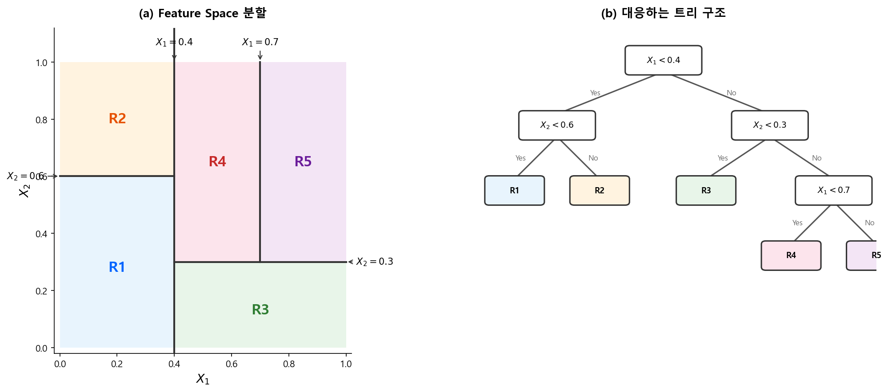
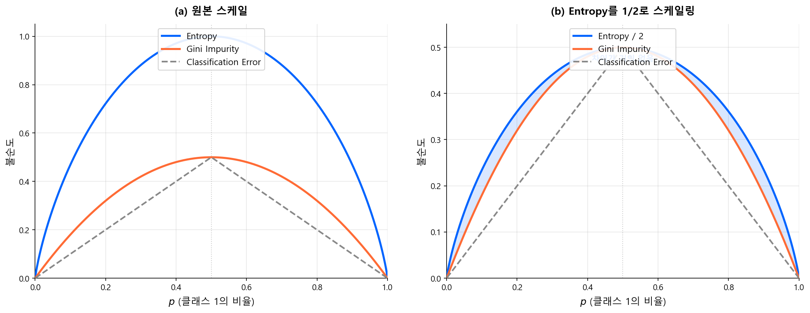
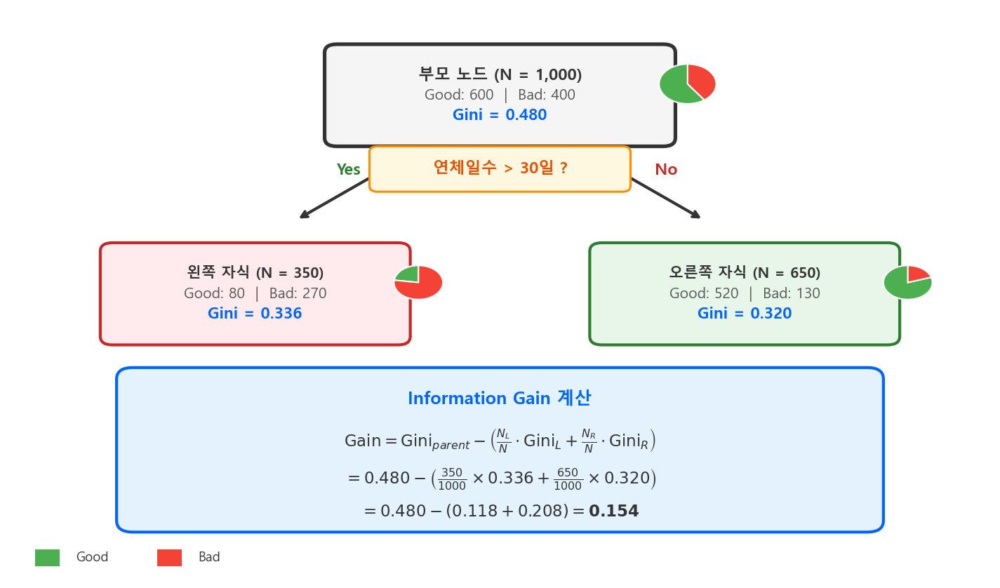
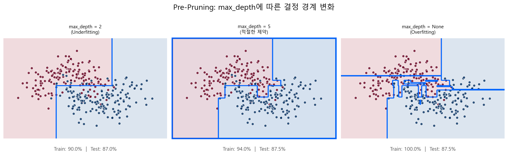
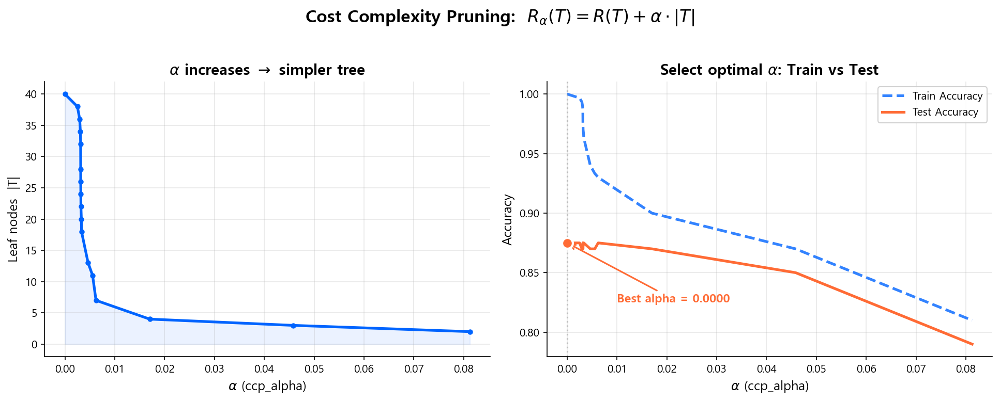
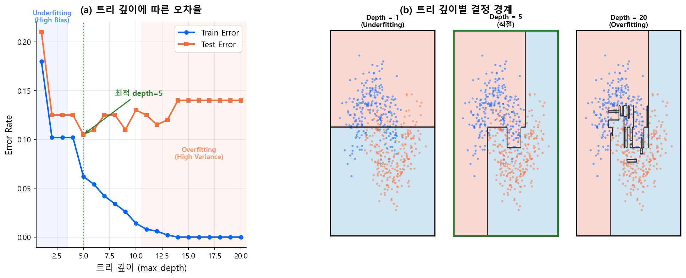

트리 기반 모델¶
설계 사상
로지스틱 회귀는 변수들의 선형 결합만 학습할 수 있다. 현실의 신용 리스크가 직선 하나로 나뉠 리가 없으므로, WoE 변환이라는 수동 비선형화가 필요했다. Decision Tree는 이 한계에 대한 가장 직관적인 답이다 — "변수 X가 임계점 t보다 큰가?"라는 질문을 반복하면, 어떤 비선형 관계든 자동으로 포착할 수 있다.
게다가 단일 트리는 사람이 읽을 수 있다. 분기 조건을 위에서 아래로 따라가면, "왜 이 고객이 Bad인가"를 설명할 수 있다. 비선형성과 해석 가능성을 동시에 가진 유일한 구조다. 다만 그 대가로 불안정성(High Variance)이라는 치명적 약점을 안고 있고, 이것이 다음 장의 앙상블로 이어지는 출발점이 된다.
1.1 CART (Classification And Regression Trees)¶
Decision Tree 알고리즘 중 가장 대표적인 것이 CART다. Leo Breiman이 1984년에 제안했으며, 이후 Bagging, Random Forest, Boosting 등 모든 트리 기반 앙상블의 기초가 된다.
트리의 구조¶
CART는 재귀적 이진 분할(Recursive Binary Splitting)로 Feature Space를 직사각형 영역들로 나눈다. 아래 그림은 2차원 공간에서의 분할과 대응하는 트리 구조를 보여준다.
{kind=link}

| 용어 | 의미 |
|---|---|
| Root Node | 최상단 노드. 전체 데이터에서 첫 번째 분할 |
| Internal Node | 중간 노드. 조건에 따라 데이터를 좌/우로 분할 |
| Leaf (Terminal Node) | 끝 노드. 최종 예측값을 출력 |
| Branch | 노드 간 연결. 분할 조건의 Yes/No 경로 |
| Depth | Root에서 Leaf까지의 경로 길이 |
분할의 원리: "어떤 변수를, 어디서 자를 것인가"¶
CART는 입력 변수 중 하나를 골라 특정 기준점(threshold)에서 데이터를 둘로 나눈다. 이 과정을 재귀적으로 반복한다.
핵심 질문은 두 가지다:
- 어떤 변수를 선택할 것인가?
- 어디서 자를 것인가?
답은 간단하다 — 나눈 후 자식 노드들이 가장 "순수"해지는 분할을 선택한다. "순수하다"는 것은 한 노드 안에 같은 클래스(Good 또는 Bad)만 모여 있는 상태를 말한다.
1.2 불순도 측정: Gini vs Entropy¶
노드의 "순수함"을 수치화하는 두 가지 대표 지표가 있다.
Gini Impurity (지니 불순도)¶
- \(p_k\): 노드 \(t\)에서 클래스 \(k\)의 비율
- 이진 분류에서: \(\text{Gini}(t) = 1 - p^2 - (1-p)^2 = 2p(1-p)\)
- 범위: 0 (완전 순수) ~ 0.5 (이진 분류에서 최대 불순)
- 해석: 노드에서 임의로 두 샘플을 뽑았을 때, 다른 클래스일 확률
Entropy (엔트로피)¶
- 범위: 0 (완전 순수) ~ 1 (이진 분류에서 최대 불순)
- 정보이론에서 온 개념: 노드의 불확실성(정보량)을 측정
Gini vs Entropy: 실무적 차이¶
| Gini Impurity | Entropy | |
|---|---|---|
| 범위 (이진) | 0 ~ 0.5 | 0 ~ 1.0 |
| 계산 | 곱셈만 | 로그 연산 포함 |
| XGBoost/LightGBM 기본값 | - | - |
| scikit-learn 기본값 | Gini | - |
| 실무 차이 | 거의 없음 | 거의 없음 |
아래 그림에서 세 지표를 비교하면, Gini와 Entropy가 거의 같은 형태임을 확인할 수 있다.
{kind=link}

결론: 어느 것을 쓰든 결과는 거의 같다
Gini와 Entropy는 곡선의 형태가 매우 유사하여, 실제로 동일한 분할을 선택하는 경우가 대부분이다. scikit-learn의 기본값은 Gini이며, 이를 바꿔야 할 이유는 거의 없다.
1.3 Information Gain (정보 이득)¶
최적 분할은 분할 전후의 불순도 감소량이 최대인 분할이다. 이것을 Information Gain이라 부른다.
- \(t\): 부모 노드
- \(L, R\): 분할 후 왼쪽/오른쪽 자식 노드
- \(\frac{N_c}{N_t}\): 자식 노드의 샘플 비율 (가중치)
CART는 모든 변수의 모든 가능한 분할점에 대해 Gain을 계산하고, Gain이 최대인 (변수, 분할점) 조합을 선택한다.
{kind=link}

신용평가 예시
"연체일수 > 30일"로 나누면 왼쪽(30일 이하)은 Bad 5%, 오른쪽(30일 초과)은 Bad 40%로 분리된다. "소득 > 5000만원"으로 나누면 양쪽 모두 Bad 15% 내외로 비슷하다. 전자의 Information Gain이 훨씬 크므로, 트리는 연체일수를 먼저 선택한다.
1.4 Regression Tree¶
분류(Classification)가 아닌 회귀(Regression) 문제에서도 트리를 사용할 수 있다. 구조는 동일하되, 분할 기준과 예측값이 다르다.
| Classification Tree | Regression Tree | |
|---|---|---|
| 타겟 | 범주형 (Good/Bad) | 연속형 (금액, 비율 등) |
| Leaf 예측값 | 다수결 클래스 (또는 확률) | 해당 노드 샘플의 평균값 |
| 불순도 측정 | Gini / Entropy | MSE (Mean Squared Error) |
| 분할 기준 | Information Gain 최대화 | MSE 감소량 최대화 |
Regression Tree의 분할 기준:
분할 후 좌/우 자식의 가중 MSE 합이 최소가 되는 (변수, 분할점)을 선택한다.
Boosting에서의 Regression Tree
이후 다룰 Gradient Boosting에서는, 분류 문제임에도 Regression Tree를 사용한다. Boosting은 각 라운드에서 잔차(residual)를 예측하는데, 잔차는 연속값이기 때문이다. 이 점을 미리 알아두면 GBM 이해가 훨씬 수월하다.
1.5 Pruning (가지치기): 과적합 제어¶
트리를 제약 없이 키우면, 모든 Leaf가 순수해질 때까지 — 극단적으로는 Leaf 하나에 샘플 1개가 될 때까지 — 분할을 계속한다. 이것이 전형적인 과적합(High Variance) 상태다. Bias-Variance Tradeoff에서 다룬 바로 그 "과적합 모형"이다.
Pre-Pruning (사전 가지치기)¶
트리를 키우는 도중에 조건을 걸어 분할을 멈추는 방식이다.
| 파라미터 | 역할 | 효과 |
|---|---|---|
max_depth |
트리의 최대 깊이 제한 | 가장 직관적이고 강력한 제약 |
min_samples_split |
분할에 필요한 최소 샘플 수 | 작은 노드의 추가 분할 방지 |
min_samples_leaf |
Leaf의 최소 샘플 수 | 극단적으로 작은 Leaf 방지 |
max_leaf_nodes |
Leaf 노드의 최대 개수 | 트리 전체 복잡도 직접 제어 |
min_impurity_decrease |
분할로 인한 최소 불순도 감소 | Gain이 너무 작으면 분할 안 함 |
{kind=link}

Post-Pruning (사후 가지치기)¶
트리를 최대한 키운 후, 성능에 기여하지 않는 가지를 잘라내는 방식이다.
Cost Complexity Pruning (CART의 기본 방식):
- \(R(T)\): 트리 \(T\)의 학습 오차 (불순도 합)
- \(|T|\): Leaf 노드 수 (트리의 복잡도)
- \(\alpha\): 페널티 계수 — 클수록 단순한 트리를 선호
\(\alpha\)를 0에서 점차 키우면, 트리가 점점 잘려나간다. Cross-Validation으로 최적 \(\alpha\)를 선택한다.
{kind=link}

Pre vs Post Pruning
실무에서는 Pre-Pruning이 압도적으로 많이 사용된다. 특히 앙상블(RF, XGBoost, LightGBM)에서는 max_depth, min_samples_leaf 등 Pre-Pruning 파라미터가 핵심 튜닝 대상이다. Post-Pruning은 단일 트리에서 주로 쓰이며, 앙상블에서는 거의 사용하지 않는다.
아래 그림은 트리 깊이에 따른 과적합 양상을 보여준다. Train Error는 깊이가 깊어질수록 계속 감소하지만, Test Error는 일정 깊이 이후 오히려 증가한다.
{kind=link}

1.6 단일 트리의 한계¶
CART 단일 트리는 직관적이고 해석이 쉽다는 장점이 있지만, 실전에서는 성능이 부족하다.
| 한계 | 설명 |
|---|---|
| High Variance | 학습 데이터가 조금만 바뀌어도 트리 구조가 완전히 달라짐 |
| Greedy 알고리즘 | 매 분할에서 최적을 선택하지만, 전역 최적이 아닐 수 있음 |
| 계단 함수 | 예측값이 Leaf 단위 상수 → 연속적 관계를 부드럽게 포착 못 함 |
| 성능 한계 | 단일 트리로는 복잡한 패턴을 충분히 학습하기 어려움 |
단일 트리의 장점(해석 용이)과 단점(불안정, 성능 한계)을 동시에 해결하는 것이 앙상블 기법이다.
그러나 "성능이 부족하다"는 평가가 곧 "쓸모없다"를 의미하지는 않는다. 단순함 자체가 목적인 영역에서는 단일 트리가 여전히 강력한 도구다.
1.7 단일 트리의 실무 활용: 룰 기반 시스템¶
왜 단일 트리가 여전히 쓰이는가¶
앙상블이 성능에서는 압도적이지만, 신용평가 실무에서는 "모형"이 아닌 "룰"이 필요한 영역이 존재한다. 얕은 트리(max_depth=2~3)는 사람이 읽을 수 있는 if-else 구조로 직접 변환할 수 있다는 점에서 독보적이다.
# max_depth=2 트리 → 사람이 읽을 수 있는 룰
if 연체일수 > 90:
if 부채비율 > 300%:
→ 자동 거절 (Bad Rate 72%)
else:
→ 심사역 검토 (Bad Rate 35%)
else:
if 소득 < 1500만원 and 신용카드_이용건수 == 0:
→ 추가 서류 요청
else:
→ 스코어카드 심사 진행
이러한 룰은 감사(audit) 시 "왜 이 고객을 거절했는가"를 한 줄로 설명할 수 있다. XGBoost 500그루의 앙상블로는 이것이 불가능하다.
활용 영역¶
| 용도 | 설명 | 트리 특성 |
|---|---|---|
| 사전 필터링 룰 | 스코어카드 진입 전 자동 거절/승인 기준 | max_depth=2~3, 해석 필수 |
| 정책 룰 (Policy Rules) | 규제 요건이나 리스크 정책의 명시적 구현 | 분기 조건 = 비즈니스 룰 |
| 고객 세분화 (Segmentation) | 세그먼트별 스코어카드 적용 시 분류 기준 도출 | CHAID/CART, 세그먼트 수 3~5개 |
| Champion-Challenger 오버라이드 | 스코어카드 결과에 대한 보정 룰 | 기존 모형의 약점 보완 |
| FDS(이상거래탐지) 룰 | 실시간 거래 차단 기준 | 속도 중요, 단순 조건 |
사전 필터링 룰: 스코어카드 진입 전 게이트¶
가장 대표적인 활용이 Application Screening이다. 스코어카드는 정교한 확률 추정 모형이지만, 명백히 고위험인 고객까지 스코어링할 필요는 없다. 단일 트리로 도출한 룰이 첫 번째 관문 역할을 한다.
필터링 룰 → 통과 → 스코어카드 → 스코어 산출 → 등급 부여 → 승인/거절
룰 vs 모형의 역할 분담
- 룰: 극단적 고위험/저위험 고객을 빠르게 걸러냄. 해석 가능성과 감사 추적(audit trail)이 핵심.
- 모형(스코어카드/ML): 나머지 "회색 지대" 고객의 리스크를 정밀하게 서열화. 성능(KS/Gini)이 핵심.
둘은 경쟁이 아니라 보완 관계다. 단일 트리의 한계(성능 부족)는 모형이 보완하고, 모형의 한계(해석 어려움)는 룰이 보완한다.
고객 세분화: 세그먼트별 스코어카드의 출발점¶
포트폴리오 전체에 하나의 스코어카드를 적용하는 것보다, 리스크 특성이 다른 세그먼트별로 별도 스코어카드를 만드는 것이 성능이 좋은 경우가 많다. 이때 세그먼트 분류 기준을 단일 트리로 도출한다.
# 세그먼트 트리 (max_depth=2)
if 기존고객 여부 == True:
if 거래기간 > 2년:
→ Segment A: 장기 기존고객 (전용 스코어카드 A)
else:
→ Segment B: 신규 기존고객 (전용 스코어카드 B)
else:
→ Segment C: 신규고객 (전용 스코어카드 C)
CHAID(Chi-squared Automatic Interaction Detector)는 이 용도에 특화된 트리 알고리즘으로, 카이제곱 검정 기반으로 통계적으로 유의한 분할만 수행하여 과도한 세분화를 자동으로 방지한다.
CART vs CHAID
| CART | CHAID | |
|---|---|---|
| 분할 방식 | 이진 분할 | 다진 분할(Multi-way) 가능 |
| 분할 기준 | Gini / Entropy | 카이제곱 검정 (p-value) |
| 정지 조건 | Pre/Post Pruning | 유의하지 않으면 자동 정지 |
| 주 용도 | 예측 모형, 앙상블 기초 | 세분화, 탐색적 분석 |
세분화 목적에서는 CHAID의 다진 분할이 더 자연스러운 경우가 많다 — "지역"이라는 변수를 이진 분할하면 {서울 vs 나머지}처럼 인위적으로 나눠야 하지만, CHAID는 {수도권, 광역시, 기타}처럼 의미 있는 그룹을 직접 만들 수 있다.
다음 섹션
단일 트리의 한계를 극복하기 위해, 다음에서는 여러 트리를 결합하는 앙상블 기법 — Bagging(Random Forest)과 Boosting의 원리를 학습한다.